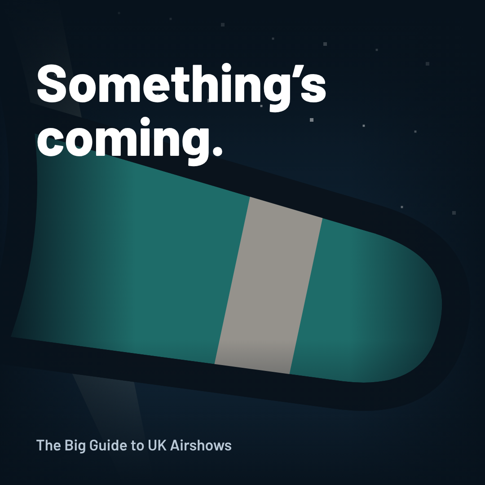
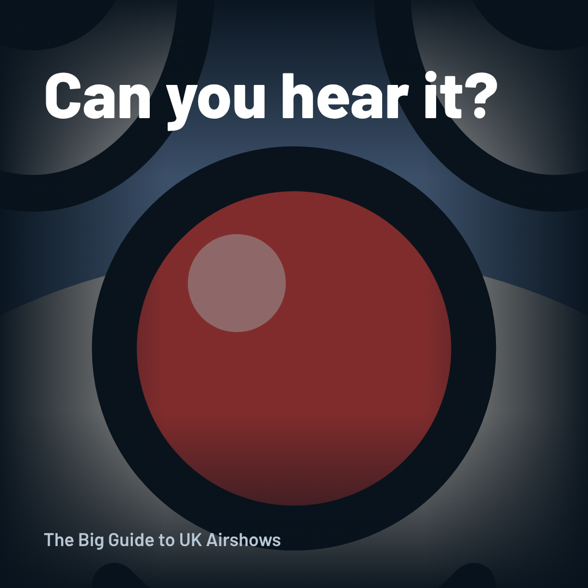
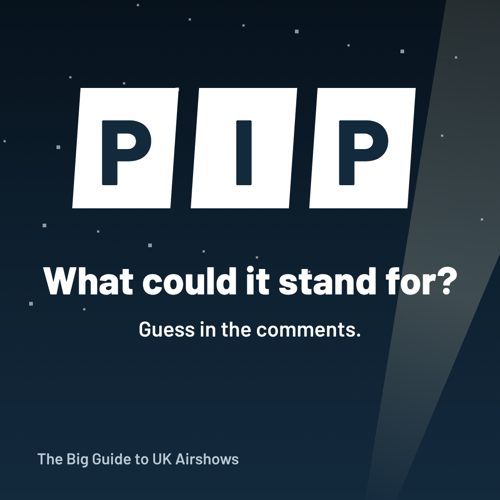
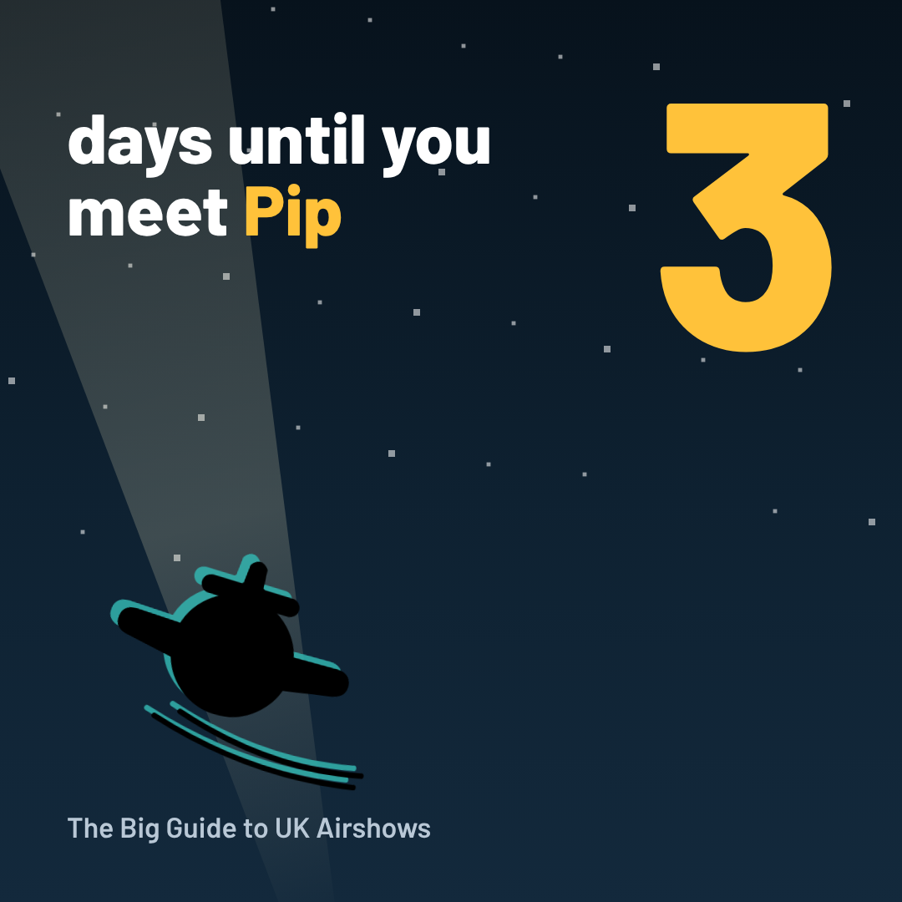
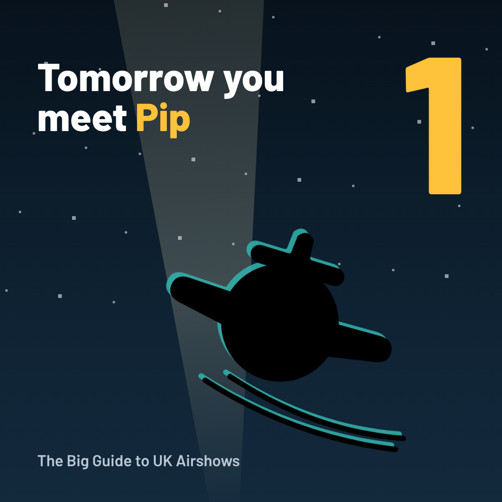
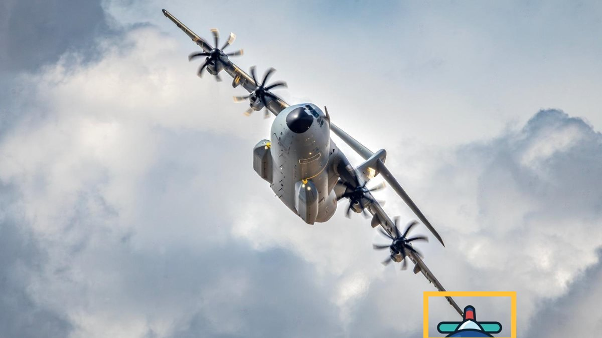

2Week by week
Pip hides in normal posts. Nobody says a word.
Carry on posting as usual. In two posts a week, hide a tiny piece of Pip in the photo with the Pip Hint Maker: a wing tip poking in at the edge, a tail fin peeking up from the bottom, a little shadow in the sky. Keep it small. Don't mention it.
Drop the odd caption that hints without saying anything:
Plan early. Inform yourself. Prepare well. 2027 is coming.The first letters spell P, I, P. Only the sharp eyed will notice.
Did anyone else just hear a little propeller?
Someone has borrowed my ear defenders. Small. Round. Very keen on airshows.
The clues step forward, still without a name.
Two hint posts on their own, a few days apart. Still no name, no explanation. Let the comments guess.
Something's coming.With hint post 1: a teal wing tip edging into the night.
Can you hear it?With hint post 2: a red nose behind a spinning propeller.


The name appears, as a question.
First the three letters, asking people to guess what they stand for. Then the "Who is Pip?" teaser video: tall for Reels, Shorts and TikTok, wide for YouTube and Facebook. Then the silhouette post.
P. I. P. What could it stand for? Wrong answers very welcome.Don't confirm any guess until reveal day. A "getting warmer" reply keeps people coming back.
Who is Pip? What is Pip? Follow us to find out.With the "Who is Pip?" teaser video.

3, 2, 1. The silhouette gets closer each day.
One post a day, in stories as well as the feed. The silhouette grows a little bigger each time, as if Pip is flying towards you.
3 days.
2 days. Get your ear defenders ready.
Tomorrow.


Meet Pip.
Morning: the four reveal squares as one swipe post, and the Meet Pip cartoon (tall for Reels, Shorts and TikTok, wide for YouTube). Pin the cartoon on YouTube and the swipe post on Instagram. Later in the day: the "See Pip? It must be airshow season" teaser.
Say hello to Pip! Pip is the new face of the UK Airshow Guide, and PIP stands for Plan, Inform, Prepare. Thank you for all your guesses. Swipe to meet Pip properly.
Then go back to the "What could it stand for?" post and reply to the best guesses.


The payoff: show where Pip was hiding all along.
A swipe post of the whispers photos, with a yellow square drawn round each hiding place. Thank the people who spotted Pip early by name in the comments (their username only, never a child's name).
Did you spot Pip? Pip has been hiding in our posts for a month. Swipe to see where. Well done if you found them all!
From here, "Spot Pip" carries on as a regular game from the kids' ideas: one hidden Pip a week for children to find.
